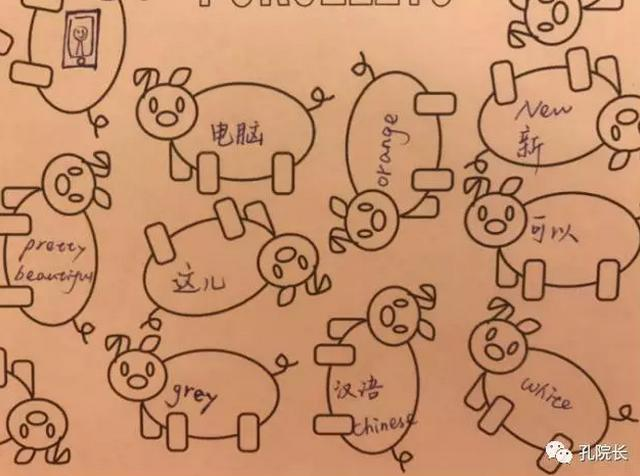

每日一篇——文化活动/ 密苏里大学孔子学院 七大精品教学活动
 1,191
1,191
来源：原创 作者：牛荦旻
在外语教学中，生动有趣的课堂活动是必不可少的，否则一堂课很容易陷入平淡乃至枯燥的局面。如何让学生边玩边学，寓教于乐，是外语教师必须思考的问题。密苏里大学孔子学院的志愿者教师们在一年的教学中，摸索出了一些高效有趣的课堂教学活动。现将几种典型活动总结如下：
一、小猪银行
这是从法语老师那里借鉴的一个游戏。准备一张布满小猪图片（或者其他动物）的纸张，然后在小猪身体的空白处填上目标检测词汇，这个词汇的表达可以是汉字，可以是拼音，也可以是英文，还可以是一个简笔画。将学生两两分组，每人选择一支与对方颜色不同的彩色铅笔，根据教师的指令寻找对应词，先找到正确词语的学生为小猪涂上自己彩笔的颜色，然后继续寻找下一个词汇，直到所有的小猪都被涂上颜色，最后获得同色小猪最多的一方获胜。这个游戏在进行生词练习巩固时常被用到，很受学生们的欢迎。类似的游戏还有“苍蝇拍”、“击打卡片”等。

二、秘籍传送
所谓秘籍，是教师根据教学内容制作的词语或句子卡片。先将学生分为若干小组，每组约四到五名学生，让他们排成一列站好，然后教师随机抽取一张卡片将其内容展示给第一个学生，该学生在消化理解了卡片内容的基础上，通过肢体动作表演将信息传递给第二个人，之后第二个人再演示给第三个人，如此类推，直到最后一位，如果最后一位能够成功猜出卡片内容，便为获胜；哪一组用时最少，就是优胜团队。如果没有猜对，教师可以一一询问每个人内心的答案，这样可以提高游戏中的汉语开口率。这个游戏和美国学生常做的Telephone很近似，可以是动作传递，也可以是语言传递，可以练习生词，也可以练习句型，灵活好用。
三、我做你猜
这是一种在各大综艺节目中常常见到的游戏，用在我们的汉语课堂上也别有一番趣味。活动非常简单，请一位学生在前面表演，其他学生用中文猜测对应的内容。或者可以换一种方式，我画你猜——请一名学生在smart board上画画，剩余的人猜测画面的意思。如果想增强游戏的竞争性，还可以将学生分成不同小组，那么，配合默契、规定时间内猜对次数最多的队伍获胜。美国学生活泼好动，对这样的活动根本没有抵抗力，每次都是积极参与；对教师而言，该活动组织起来十分容易，是一种生动有趣的课堂热身办法。
四、“123看上边！”
在学习汉语方位词的时候，我们曾经借鉴一档电视节目里的游戏，运用逆向思维做过这个“123看上边”活动，很受学生喜爱。教师手上可以戴一个夸张的卡通手偶，用语言和手势同时发令，学生根据教师的指令，做出与指令相反的动作。比如教师说“123看上边！”学生应该迅速反应看下边才算通关，如果教师说“123看左边！”那么学生应该迅速反应看向右边。由于教师手势和语言同时进行，所以学生很容易被牵着走，但也正因如此，增加了游戏的趣味性和挑战性。在对游戏内容熟悉之后，也可以请学生来当发令员，通过让他们开口不断练习，以增强对方位词的记忆。
五、萝卜蹲
这也是在中国电视节目里屡见不鲜的一种游戏。让学生自己制作生词卡片，在此过程中锻炼他们书写汉字的能力，然后在每次活动中选择一张生词卡片贴在身上，代表游戏中自己的身份。这些生词往往是名词，多为器具、物件或者动物、人物之类。比如说动物，第一个开口的“熊猫”边蹲边说：“熊猫蹲，熊猫蹲，熊猫蹲完大象蹲”，接下来“大象”就要立即反应过来开始蹲，并指示下一个角色，依次传递……反应迟钝或者说话卡壳就算出局，坚持到最后的同学获胜。这个游戏旨在重复中记忆生词，边玩边学，学生觉得很有趣。
六、Two Truth One Lie
这是一个在不同外语课上都经常被使用的活动，尤其是在学生有了一定的语言功底，能够独立造句，能进行成段表达以后。教师给每个学生发一张白纸，要求他们在规定时间内用学过的句型造三个句子，句子所表述的内容必须有一个是假的。学生往往会描述一些与自身相关的事物、喜好等。在造句完成后，学生上前依次念出三个句子，让大家来判断真假。如果大家判断错误，该生可以再用中文解释，澄清所写的“谎言”。这个活动不仅可以练习学生的书面及口语表达能力，还能增进同学们之间的了解，是一种很好的课堂导入活动。
七、Brown Bear, Brown Bear, What do you see?
Brown Bear, Brown Bear, What do you see? 是一本知名的英文绘本图画书，在美国孩子中很受欢迎。“Brown Bear, Brown Bear, What do you see？”“I see a yellow dog looking at me.”这类句型贯穿全书，是一本轻松有趣的少年读物。我们在教授汉语的颜色和动物名称之后，决定借鉴这个优秀的绘本，让每个学生绘制一本中文版《咖啡色熊，咖啡色熊，你看什么？》学生可以自己画画，也可以从网上筛选图片、打印剪贴，制作出一个中文绘本。超出我们想象的是，学生们交来的绘本都很精致、优美！不仅他们自己非常珍视自己的“作品”，就是将这本中文绘本展示给家长，也赢得了高度的赞扬。
这些活动是我们常用并被实践验证行之有效的，大家可以根据自己的课堂规模和学生特质，进行发散思维，有选择地使用或创造适合自己课堂的教学游戏。丰富多彩的课堂活动，一定能为你的课堂增光添彩，让学生在快乐中感受汉语的魅力。
作者简介：
牛荦旻，白羊座，美国密苏里大学孔子学院汉语教师志愿者。常愿内心喜乐，世界和平。